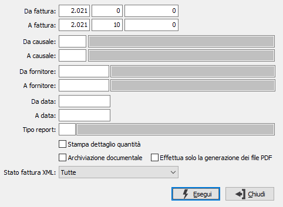

Stampa autofatture
Il programma attiva la stampa differita o la ristampa delle autofatture, sulla base dei parametri di selezione inseriti dall’utente.

DA FATTURA: tre campi per contenere rispettivamente anno, serie sezionale e numero del documento da cui si vuole iniziare la selezione. Confermando a vuoto, la selezione inizia dal primo documento compatibile con i successivi parametri.
A FATTURA: tre campi per contenere rispettivamente anno, serie sezionale e numero del documento con cui si vuole concludere la selezione. Confermando a vuoto, la selezione termina con l’ultimo documento compatibile con i successivi parametri.
DA CAUSALE: codice della causale documento da cui si vuole iniziare la selezione. Confermando a vuoto, la selezione inizia dalla prima causale valida. Sul campo sono attive le funzioni di ricerca (F9).
A CAUSALE: codice della causale documento con cui si vuole iniziare la selezione. Confermando a vuoto, la selezione termina all’ultima causale valida. Sul campo sono attive le funzioni di ricerca (F9).
DA FORNITORE: eventuale codice del fornitore, presente in anagrafica, da cui si vuole iniziare la selezione di analisi. Confermando a vuoto, la selezione inizia dal primo fornitore valido. Sul campo sono attive le funzioni di ricerca (F9).
A FORNITORE: eventuale codice del fornitore, presente in anagrafica, con cui si vuole terminare la selezione di analisi. Confermando a vuoto, la selezione termina con l'ultimo fornitore valido. Sul campo sono attive le funzioni di ricerca (F9).
DA DATA: data documento da cui si vuole iniziare la selezione. Confermando a vuoto, la selezione inizia dalla prima data valida.
A DATA: data documento con cui si vuole concludere la selezione. Confermando a vuoto, la selezione termina con l'ultima data valida.
TIPO REPORT: consente di specificare un tipo di report specifico per stampare solo i documenti che hanno sulla causale il tipo report inserito. Sul campo sono attive le funzioni di ricerca (F9).
STAMPA DETTAGLIO QUANTITÀ: check box. Se contiene la spunta, indica se nella stampa desideriamo visualizzare il dettaglio delle quantità.
ARCHIVIAZIONE DOCUMENTALE: Il campo è presente solo se installato il modulo di archiviazione; definisce se i documenti devono essere stampati per essere archiviati.
EFFETTUA SOLO LA GENERAZIONE DEI FILE PDF: Il campo è presente solo se installato il modulo "Fatturazione elettronica"; consente di generare il file PDF delle fatture da allegare al file XML generato (su opzione) da OS1BoxFatture. Il file PDF viene generato direttamente nella cartella “Cartella allegati” specificata nella configurazione di OS1BoxFatture, sottocartella "FCT".
STATO FATTURA XML: Il campo è presente solo se installato il modulo "Fatturazione elettronica"; definisce quali documenti devono essere selezionati in relazione allo stato del documento presente in OS1BoxFatture. Valori ammessi:
Da inviare
Inviata
In attesa di notifiche
Scartata
Consegnata
Non consegnata
Tutte